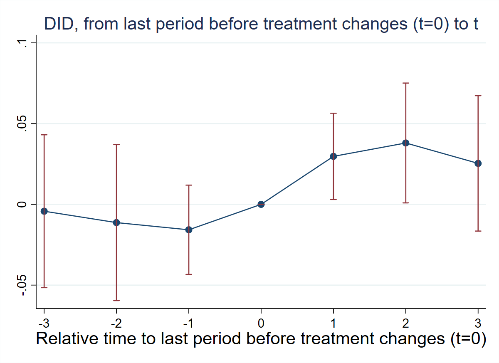
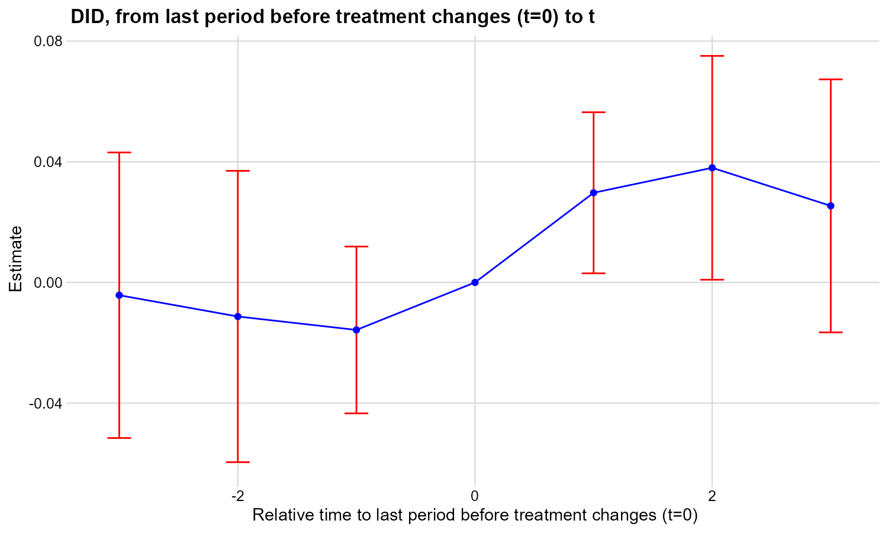
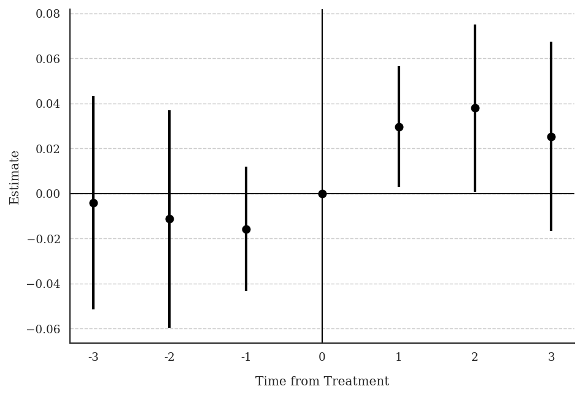
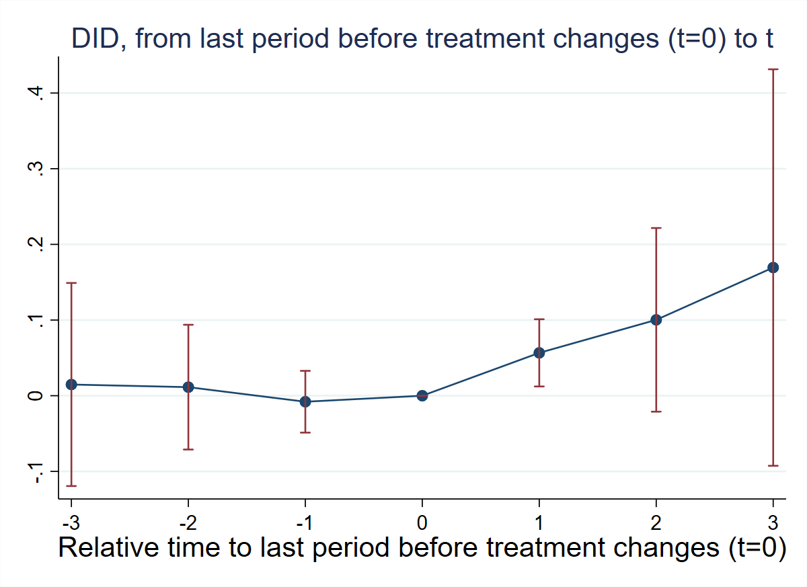
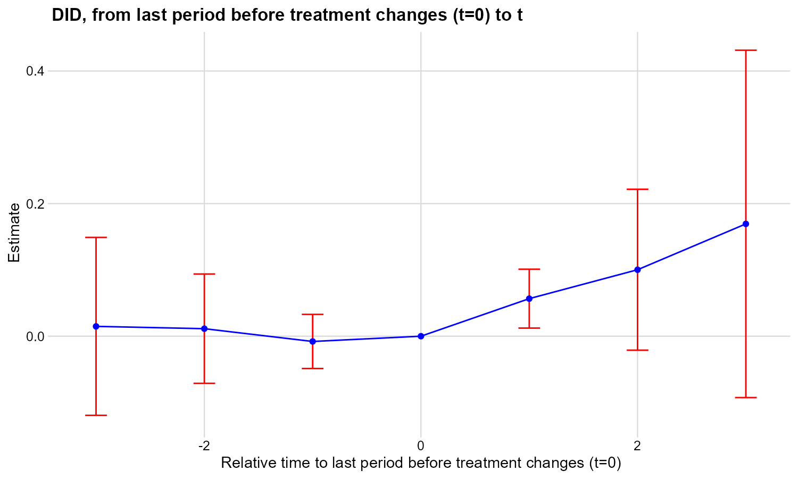
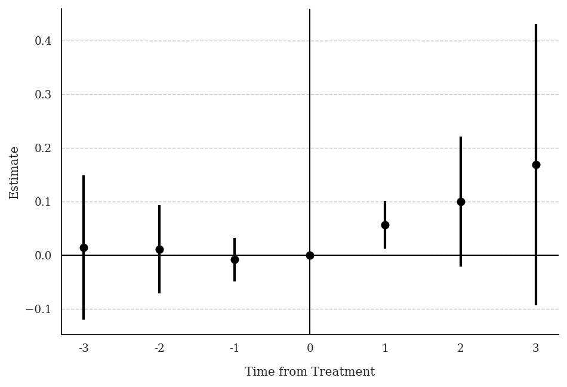

4 Chapter 12: Hollingsworth et al. (2022) — Marijuana Legalization and Drug Use
Research Question: How do medical and recreational marijuana laws differentially affect marijuana use among adults and adolescents?
Data: State-year panel 2002–2019. Two binary absorbing treatments: mm (medical legalization) and rm (recreational legalization), where medical always precedes recreational. Outcome: ln_mj_use_365 (log of marijuana use in the past 365 days).
4.1 T12: Summary Statistics and Design Verification
* ssc install did_multiplegt_dyn, replace
copy "https://raw.githubusercontent.com/anzonyquispe/did_book/main/did_applied_book/data/hollingsworth_et_al_2022.dta" "hollingsworth_et_al_2022.dta", replace
use "hollingsworth_et_al_2022.dta", clear
sum ln_mj_use_365 mm rm
xtset state year
tab mm
tab rm
tab d_mm
tab d_rm
tab mm_rm_timing Variable | Obs Mean Std. dev. Min Max
-------------+---------------------------------------------------------
ln_mj_us~365 | 765 2.433264 .259119 1.77137 3.30977
mm | 765 .3045752 .4605284 0 1
rm | 765 .0235294 .1516768 0 1
mm | Freq. Percent Cum.
------------+-----------------------------------
0 | 532 69.54 69.54
1 | 233 30.46 100.00
------------+-----------------------------------
Total | 765 100.00
rm | Freq. Percent Cum.
------------+-----------------------------------
0 | 747 97.65 97.65
1 | 18 2.35 100.00
------------+-----------------------------------
Total | 765 100.00
d_mm | Freq. Percent Cum.
------------+-----------------------------------
0 | 693 97.06 97.06
1 | 21 2.94 100.00
------------+-----------------------------------
Total | 714 100.00
d_rm | Freq. Percent Cum.
------------+-----------------------------------
0 | 707 99.02 99.02
1 | 7 0.98 100.00
------------+-----------------------------------
Total | 714 100.00
mm_rm_timin |
g | Freq. Percent Cum.
------------+-----------------------------------
0 | 550 71.90 71.90
1 | 215 28.10 100.00
------------+-----------------------------------
Total | 765 100.00Both treatments take values 0 or 1 — binary and absorbing. mm_rm_timing is always ≥ 0 — medical always precedes recreational.
# install.packages(c("DIDmultiplegtDYN", "polars", "haven", "dplyr"))
library(haven)
library(dplyr)
library(DIDmultiplegtDYN)
library(polars)
load(url("https://raw.githubusercontent.com/anzonyquispe/did_book/main/did_applied_book/data/hollingsworth_et_al_2022.RData"))
df %>% select(ln_mj_use_365, mm, rm) %>% summary()
table(df$mm)
table(df$rm)
table(df$mm - df$rm) ln_mj_use_365 mm rm
Min. :1.771 Min. :0.0000 Min. :0.00000
1st Qu.:2.250 1st Qu.:0.0000 1st Qu.:0.00000
Median :2.395 Median :0.0000 Median :0.00000
Mean :2.433 Mean :0.3046 Mean :0.02353
3rd Qu.:2.585 3rd Qu.:1.0000 3rd Qu.:0.00000
Max. :3.310 Max. :1.0000 Max. :1.00000
0 1
532 233
0 1
747 18
0 1
550 215 Both treatments are binary and absorbing. mm - rm is always ≥ 0 — medical always precedes recreational.
# pip install py-did-multiplegt-dyn pandas pyarrow
import pandas as pd
from did_multiplegt_dyn import DidMultiplegtDyn
df = pd.read_parquet("https://raw.githubusercontent.com/anzonyquispe/did_book/main/did_applied_book/data/hollingsworth_et_al_2022.parquet")
print(df[["ln_mj_use_365", "mm", "rm"]].describe())
print(df["mm"].value_counts().sort_index())
print(df["rm"].value_counts().sort_index())
print((df["mm"] - df["rm"]).value_counts().sort_index()) ln_mj_use_365 mm rm
count 765.000000 765.000000 765.000000
mean 2.433264 0.304575 0.023529
std 0.259119 0.460528 0.151677
min 1.771370 0.000000 0.000000
25% 2.250365 0.000000 0.000000
50% 2.395064 0.000000 0.000000
75% 2.584752 1.000000 0.000000
max 3.309770 1.000000 1.000000
mm
0 532
1 233
rm
0 747
1 18
0 550
1 215Both treatments are binary and absorbing. mm - rm is always ≥ 0 — medical always precedes recreational.
4.2 T13: Effects of Medical Marijuana Laws
* ssc install did_multiplegt_dyn, replace
copy "https://raw.githubusercontent.com/anzonyquispe/did_book/main/did_applied_book/data/hollingsworth_et_al_2022.dta" "hollingsworth_et_al_2022.dta", replace
use "hollingsworth_et_al_2022.dta", clear
did_multiplegt_dyn ln_mj_use_365 state year mm if rm==0, effects(3) placebo(3) cluster(state)--------------------------------------------------------------------------------
Estimation of treatment effects: Event-study effects
--------------------------------------------------------------------------------
| Estimate SE LB CI UB CI N Switchers
-------------+------------------------------------------------------------------
Effect_1 | .0297197 .0136225 .00302 .0564194 361 21
Effect_2 | .0380018 .0189295 .0009006 .0751029 324 16
Effect_3 | .025386 .0213948 -.016547 .067319 307 16
--------------------------------------------------------------------------------
Test of joint nullity of the effects : p-value = .15497711
Av_tot_eff | .0309117 .0144444 .0026012 .0592221 499 53
Average number of time periods over which a treatment's effect is accumulated = 1.9056604
Placebo_1 | -.0157475 .0141094 -.0434015 .0119065 361 21
Placebo_2 | -.0112911 .024639 -.0595826 .0370004 281 14
Placebo_3 | -.0042399 .0241491 -.0515713 .0430916 265 14
--------------------------------------------------------------------------------
Test of joint nullity of the placebos : p-value = .71060368
# install.packages(c("DIDmultiplegtDYN", "polars", "ggplot2"))
library(DIDmultiplegtDYN)
library(polars)
library(ggplot2)
load(url("https://raw.githubusercontent.com/anzonyquispe/did_book/main/did_applied_book/data/hollingsworth_et_al_2022.RData"))
res_t13 <- did_multiplegt_dyn(df[df$rm==0,], "ln_mj_use_365", "state", "year", "mm",
effects=3, placebo=3, cluster="state")
print(res_t13)
res_t13$plot----------------------------------------------------------------------
Estimation of treatment effects: Event-study effects
----------------------------------------------------------------------
Estimate SE LB CI UB CI N Switchers
Effect_1 0.02972 0.01362 0.00302 0.05642 361 21
Effect_2 0.03800 0.01893 0.00090 0.07510 324 16
Effect_3 0.02539 0.02139 -0.01655 0.06732 307 16
Test of joint nullity of the effects : p-value = 0.1550
Av_tot_eff | 0.03091 0.01444 0.00260 0.05922 499 53
Average number of time periods over which a treatment effect is accumulated: 1.9057
Placebo_1 -0.01575 0.01411 -0.04340 0.01191 361 21
Placebo_2 -0.01129 0.02464 -0.05958 0.03700 281 14
Placebo_3 -0.00424 0.02415 -0.05157 0.04309 265 14
Test of joint nullity of the placebos : p-value = 0.7106
# pip install py-did-multiplegt-dyn polars matplotlib
import polars as pl
import matplotlib
matplotlib.use('Agg')
import matplotlib.pyplot as plt
from did_multiplegt_dyn import DidMultiplegtDyn
df = pl.read_parquet("https://raw.githubusercontent.com/anzonyquispe/did_book/main/did_applied_book/data/hollingsworth_et_al_2022.parquet")
res_t13 = DidMultiplegtDyn(
df=df.filter(pl.col("rm")==0),
outcome="ln_mj_use_365", group="state", time="year", treatment="mm",
effects=3, placebo=3, cluster="state"
)
res_t13.fit()
res_t13.summary()
res_t13.plot()
plt.savefig("ch09_fig7_marijuana_medical_py.png", dpi=150, bbox_inches="tight")
plt.close()================================================================================
Estimation of treatment effects: Event-study effects
================================================================================
Block Estimate SE LB CI UB CI N Switchers
Effect_1 0.029720 0.013623 0.003020 0.056419 361.0 21.0
Effect_2 0.038002 0.018930 0.000901 0.075103 324.0 16.0
Effect_3 0.025386 0.021395 -0.016547 0.067319 307.0 16.0
Average_Total_Effect 0.030912 0.014444 0.002601 0.059222 499.0 53.0
Placebo_1 -0.015747 0.014109 -0.043401 0.011907 361.0 21.0
Placebo_2 -0.011291 0.024639 -0.059583 0.037000 281.0 14.0
Placebo_3 -0.004240 0.024149 -0.051571 0.043092 265.0 14.0
================================================================================
Test of joint nullity of the effects: p-value = 0.154977
Test of joint nullity of the placebos: p-value = 0.710604
Interpretation: Medical marijuana laws increase marijuana use by ~3%, though effects are marginally significant (p = 0.155). Pre-trends are small and jointly insignificant (p = 0.71), supporting parallel trends.
4.3 T14: Effects of Recreational Marijuana Laws
* ssc install did_multiplegt_dyn, replace
copy "https://raw.githubusercontent.com/anzonyquispe/did_book/main/did_applied_book/data/hollingsworth_et_al_2022.dta" "hollingsworth_et_al_2022.dta", replace
use "hollingsworth_et_al_2022.dta", clear
egen fg1 = min(cond(mm == 1, year, .)), by(state)
did_multiplegt_dyn ln_mj_use_365 state year rm if mm==1, effects(3) placebo(3) trends_nonparam(fg1) cluster(state)--------------------------------------------------------------------------------
Estimation of treatment effects: Event-study effects
--------------------------------------------------------------------------------
| Estimate SE LB CI UB CI N Switchers
-------------+------------------------------------------------------------------
Effect_1 | .0566549 .0226574 .0122473 .1010626 23 7
Effect_2 | .100263 .061912 -.0210824 .2216083 16 5
Effect_3 | .1693897 .1336577 -.0925745 .431354 8 2
--------------------------------------------------------------------------------
Test of joint nullity of the effects : p-value = .06567349
Av_tot_eff | .0883342 .0407436 .0084782 .1681901 44 14
Average number of time periods over which a treatment's effect is accumulated = 1.6428571
Placebo_1 | -.0079344 .0208247 -.0487501 .0328813 23 7
Placebo_2 | .0113437 .0420547 -.0710819 .0937694 16 5
Placebo_3 | .0148201 .0684662 -.1193712 .1490114 8 2
--------------------------------------------------------------------------------
Test of joint nullity of the placebos : p-value = .93253844
# install.packages(c("DIDmultiplegtDYN", "polars", "ggplot2"))
library(DIDmultiplegtDYN)
library(polars)
library(ggplot2)
load(url("https://raw.githubusercontent.com/anzonyquispe/did_book/main/did_applied_book/data/hollingsworth_et_al_2022.RData"))
df$fg1 <- ave(ifelse(df$mm==1, df$year, NA), df$state, FUN=function(x) min(x, na.rm=TRUE))
res_t14 <- did_multiplegt_dyn(df[df$mm==1,], "ln_mj_use_365", "state", "year", "rm",
effects=3, placebo=3, trends_nonparam="fg1", cluster="state")
print(res_t14)
res_t14$plot----------------------------------------------------------------------
Estimation of treatment effects: Event-study effects
----------------------------------------------------------------------
Estimate SE LB CI UB CI N Switchers
Effect_1 0.05665 0.02266 0.01225 0.10106 23 7
Effect_2 0.10026 0.06191 -0.02108 0.22161 16 5
Effect_3 0.16939 0.13366 -0.09257 0.43135 8 2
Test of joint nullity of the effects : p-value = 0.0657
Av_tot_eff | 0.08833 0.04074 0.00848 0.16819 44 14
Average number of time periods over which a treatment effect is accumulated: 1.6429
Placebo_1 -0.00793 0.02082 -0.04875 0.03288 23 7
Placebo_2 0.01134 0.04205 -0.07108 0.09377 16 5
Placebo_3 0.01482 0.06847 -0.11937 0.14901 8 2
Test of joint nullity of the placebos : p-value = 0.9325
# pip install py-did-multiplegt-dyn polars matplotlib
import polars as pl
import matplotlib
matplotlib.use('Agg')
import matplotlib.pyplot as plt
from did_multiplegt_dyn import DidMultiplegtDyn
df = pl.read_parquet("https://raw.githubusercontent.com/anzonyquispe/did_book/main/did_applied_book/data/hollingsworth_et_al_2022.parquet")
df = df.with_columns(
pl.when(pl.col("mm")==1).then(pl.col("year")).otherwise(None)
.min().over("state").alias("fg1")
)
res_t14 = DidMultiplegtDyn(
df=df.filter(pl.col("mm")==1),
outcome="ln_mj_use_365", group="state", time="year", treatment="rm",
effects=3, placebo=3, trends_nonparam=["fg1"], cluster="state"
)
res_t14.fit()
res_t14.summary()
res_t14.plot()
plt.savefig("ch09_fig8_marijuana_recreational_py.png", dpi=150, bbox_inches="tight")
plt.close()================================================================================
Estimation of treatment effects: Event-study effects
================================================================================
Block Estimate SE LB CI UB CI N Switchers
Effect_1 0.056655 0.022657 0.012247 0.101063 23.0 7.0
Effect_2 0.100263 0.061912 -0.021082 0.221608 16.0 5.0
Effect_3 0.169390 0.133658 -0.092575 0.431354 8.0 2.0
Average_Total_Effect 0.088334 0.040744 0.008478 0.168190 44.0 14.0
Placebo_1 -0.007934 0.020825 -0.048750 0.032881 23.0 7.0
Placebo_2 0.011344 0.042055 -0.071082 0.093769 16.0 5.0
Placebo_3 0.014820 0.068466 -0.119371 0.149011 8.0 2.0
================================================================================
Test of joint nullity of the effects: p-value = 0.065673
Test of joint nullity of the placebos: p-value = 0.932538
Interpretation: Recreational marijuana laws increase marijuana use by ~6% in the short run and ~17% in the long run, though effects are marginally significant (p = 0.066). Pre-trends are flat and jointly insignificant (p = 0.93).